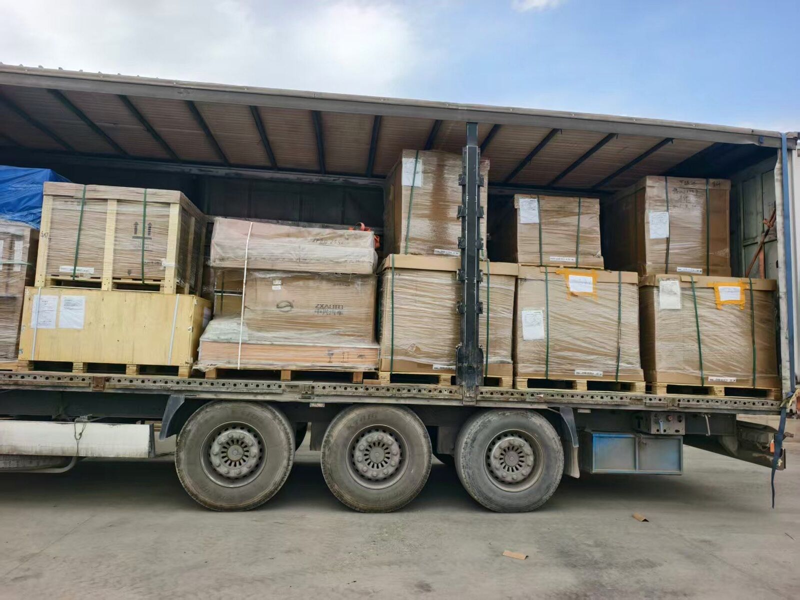

EQUIPMENT
Not a container: how Iran cargo is loaded
"Can you put it in a container?" is one of the first questions in most enquiries. On this corridor the answer is no: the vehicle is a curtain-side trailer, not a container. That is not a wording preference. It changes how the cargo is loaded, how it is secured, and how you count the number of trucks. This page takes the three in turn.
- Equipment: curtain-side trailer (tilt trailer), not a container
- Ceiling per truck: 80 CBM and 22 tonnes, whichever comes first
- Full trailers only — we do not consolidate
- Hub to customs, CPT / DAP
Why a curtain sider on this corridor
The route starts in Xinjiang, crosses Kyrgyzstan, Uzbekistan and Turkmenistan, and enters Iran at Sarakhs. Along it the load is handled more than once: a direct truck is transloaded once, at Bukhara — "direct" means no stop to consolidate, not zero transloading — and a transshipment truck is handled at Osh and again at Bukhara.
Once transloading happens mid-route, side access stops being a detail. The curtain opens and a forklift works from the side; nobody has to lift a closed steel box off the chassis and set it down again. The same property matters at origin: if pallets are loaded from the nose and stacked end to end, every one of them has to come out at the transload point before the rear ones move.
Part of this traffic also runs under TIR: sealed at origin under a single carnet. The practical effect is that the load is opened fewer times en route — fewer, not never. A carnet does not change transit time and does not change the freight.
The real ceilings: cubic metres and tonnes
A curtain-side trailer has no "20-foot" or "40-foot" number you can measure cargo against. Two ceilings sit on the load space and both apply: 80 CBM and 22 tonnes. Whichever fills first is the limit. Building materials and machinery hit the weight ceiling; flat-pack furniture, textiles and foam goods hit the volume ceiling with payload left over.
So count trucks in cubic metres, and measure volume from the outside carton dimensions rather than the product dimensions. On a large order that gap is several cubic metres, and several cubic metres is the line between one truck and two. The ceiling is the same for a direct truck and for a transshipment truck: we publish one number, not two.
What a curtain sider makes harder
Three things are worth knowing before loading, because none of them can be fixed afterwards.
First, there are no rigid walls. A container's steel wall can carry a lean; a curtain cannot. Strapping, corner protection and lashing are therefore part of the job, not an extra. Securing and lashing are not in our freight and are quoted separately. If your supplier does the securing, agree the lashing plan with us before loading starts.
Second, it is not a sealed, unventilated box. Across four countries the temperature and humidity swing, and a curtain is not a sealed steel shell. For MDF, board, fabric and paper that means warping and trapped odour. Practical advice: a waterproof inner liner, a pallet or wooden dunnage so cargo is off the deck, and desiccant bags for sensitive goods. These are packaging recommendations, not a promise about the outcome.
Third, dimensions are free but not unlimited. Because the load space is not a standard box, wide and long cargo does fit — but it still consumes cubic metres, and anything beyond the normal envelope is reviewed and charged separately. Put the outside dimensions in the enquiry so this is clear from the start.
What this equipment suits
The base is general cargo: spare parts, building materials, machinery, white goods, textiles, solar panels. Three categories need their paperwork reviewed first, and a review is not an acceptance to carry: chemicals and dangerous goods, and any cargo carrying a logo or brand name on the product or carton. Lithium batteries need a full 16-section MSDS and UN packaging certification.
Destination and delivery
Sarakhs is Iran's entry gateway and is not a sellable destination. Sellable destinations are Mashhad Customs or Tehran West Customs; in Tehran that means Gomrok Gharb, Shahriyar or Aprin Dry Port. Delivery is hub-to-customs on CPT / DAP terms: no door-to-door, no DDP, and Iran clearance sits with the consignee's licensed broker.
Transit time
Wuqia-line time is counted from the Wuqia border, not from the Chinese hub, and excludes Iran customs clearance. Currently a direct truck takes 21–23 days to Tehran Customs and 18–21 days to Mashhad Customs; a transshipment truck takes 26–30 and 24–28 days. The Chinese hub to the Wuqia border is normally about 7 days, counted separately. The Khorgos line carries no published day count — it is given in a written quote. These are current ranges, not guarantees.

What to send with an enquiry
Six items: origin hub (Yiwu, Shenzhen Pinghu, Guangzhou Baiyun, Shanghai or the border supervised zone), destination customs post, cargo name with HS code, gross weight in kg, volume in CBM, and the number of packages with outside dimensions. With those six we issue a written rate with a validity date. Freight is not published on this page.
FAQ
Do you load cargo into containers?
No. This corridor runs curtain-side trailers (tilt trailers), not containers. Cargo is loaded from the side and handled again at the transload points.
How much cargo fits on one truck?
The ceiling is 80 CBM and 22 tonnes per truck, whichever comes first. The same ceiling applies to a direct truck and to a transshipment truck.
Do you take LCL?
No. This lane is full trailers only (FTL), hub to destination customs under CPT / DAP. For a quote send: origin hub, destination customs, HS code, gross kg, CBM.
Is lashing included in the freight?
No. Securing and lashing are charged separately. If your supplier does the securing, agree the lashing plan with us before loading.
Related: Direct truck or transshipment · Loading a warehouse cage · CPT/DAP versus DDP